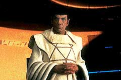
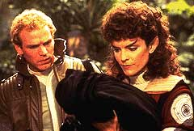
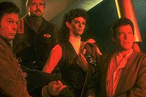
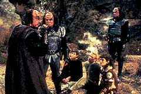
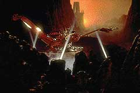
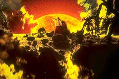
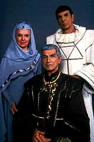

|
Leonard
Nimoy Procura de Spock
 "
de longe a melhor coisa que fiz, o melhor lugar de repouso que j
conheci." "
de longe a melhor coisa que fiz, o melhor lugar de repouso que j
conheci."
 Esta
outra citao famosa do livro de Charles Dickens tem a ver tanto
com o segundo quanto com o terceiro filme, Jornada nas Estrelas III
- Procura de Spock. Ele foi a continuao do retumbante sucesso
de Jornada no cinema e consolidou a vida o projeto, ajudando a
diminuir as incertezas quanto ao seu futuro.
A batalha para fazer a Enterprise navegar mais uma vez foi bem mais
tranqila que nos flmes anteriores. Harve Bennett continuou tocando
a produo porque j tinha mostrado a que veio, mas o grande
problema era saber quem seria o diretor. Nicholas Meyer no queria
ser, assim como alguns chefes no o queriam.
Leonard Nimoy aproveitou a oportunidade de ter uma posio favorvel
--pois o filme era sobre a volta de seu personagem-- e a
"janela" estava aberta para exigir um poquinho mais do que
o de costume por causa do sucesso anterior.
 Aps
semanas de negociaes, a verdadeira e mais importante cadeira de
comando da Enterprise estava ocupada por um diretor novato e
inexperiente, mas muito promissor.
Alguns boatos quase impediram que isso acontecesse: Nimoy se
ofereceu para dirigir o filme e alguns acharam timo, mas algum
inventou a histria de que ele odiava Jornada e no queria saber
mais disso, fazendo constar uma clusula no seu contrato anterior
de que se afastaria para sempre deste trabalho.
Depois de negar veementemente o boato e pressionar o mais que pde,
tornou-se o diretor. claro que, mesmo assim, muita gente ficou
apreensiva: o elenco, os executivos, Harve Bennett e Gene
Roddenberry, mas Nimoy mostrava firmeza e competncia, fazendo um
filme bem sucedido artstica e comercialmente, com gastos abaixo do
oramento inicial.
 Todo
mundo gostou do resultado, mas, Gene Roddenberry no deixou de
reclamar com Bennett por causa da destruio da Enterprise. Ele
achava que Bennett tramou para substitu-la pela Excelsior, o
"grande experimento", interferindo de novo em sua obra,
dessa vez no seu smbolo maior.
Desculpas parte, a esta altura do campeonato, muita gente da
equipe no dava mais muita bola para o que Roddenberry falava.
O roteiro do filme d continuidade ao filme anterior, resolvendo a
trama desencadeada pelo segredo em torno do Projeto Gnese e
trazendo Spock do mundo dos mortos atravs da ao intempestiva
de seus companheiros.
 O
tema da amizade e seus limites posto no filme de maneira
especial. Afinal de contas, no todo mundo que sai por a
desobedecendo ordens, invadindo manicmios e destruindo sua nave
para ir a um planeta proibido para resgatar um amigo. Intrepidez
isso a!
James Kirk experimenta um sentimento de soliadiedade e unio muito
forte quando conta com a ajuda de seus liderados para pr seu plano
em ao. Encorajado por eles e cobrado por Sarek, o pai de Spock,
ele tenta o absurdo e o impossvel.
Ao mesmo tempo que vai audaciosamente em busca de seu objetivo,
sofre uma perda brutal. O seu filho David morre nas mos de seus
maiores inimigos, os klingons. Shatner disse que a reao de Kirk
ao saber a notcia foi o melhor desempenho de Kirk nas telas,
apesar das contuses que sofreu para filmar as cenas na ponte de
comando da nave.
Passar a maior parte da vida navegando estre as estrelas, ignorando
a existncia de seu filho, para depois encontr-lo, desenvolver um
relacionamente amigvel com ele e perd-lo por causa da pura
maldade e desejo de vingana de um membro do Imprio Klingon
demais da conta para algum, mesmo para uma figura como Kirk.
A outra grande perda a sua nave, em funo dos mesmos klingons.
Isso esgota quase todas as possibilidades de continuar lutando com
suas prprias foras. Embora more numa bela casa de frente para a
baa de San Francisco, no fosse o resgate bem sucedido de seu
amigo, nosso querido heri teria cado de vez no fundo do mar.
Parece que, com essa, ele aprendeu o significado de um velho ditado
(vulcano ?!) que diz: "Rapadura doce, mas no mole, no".
 Pela
primeira e nica vez, Spock rescita o mote de Kirk sobre a misso
da Enterprise no incio do filme, mas, infelizmente, no nos
mostrou se e o que tem do lado de l da morte. Pelo menos fez com
que ns saibamos sobre a dureza de crescer rapidamente sem uma
namorada e os amigos pore perto.
A sua experincia de se formar um adulto em poucas horas por causa
do efeito mutante do planeta Gnese muito dramtica para apenas
duas horas de fita. O aspecto mais explcito so as passagens pelo
"pon farr", o acasalamento vulcano. Saavik quebrou um galho
se tornando a sua companheira, o que nos faz pensar na possibilidade
no-explorada de um futuro casamento.
At porque, sendo ela vulcana e, para muitos, meio romulana (apesar
da inteno do roteiro, no foi explicitado nas filmagens), j
daria um bom motivo para fazer Spock sair atrs da unificao com
os romulanos, conforme vimos na Nova Gerao.
E olha que Saavik j andava meio chateada com a afirmao de Kirk
no funeral de Spock, dizendo ser ele a alma mais humana que seu
capito j havia encontrado por a.
Depois de ter sido levado a Vulcano para retomar o seu
"katra" num ritual mstico tradicional, reconhece e
reune-se aos seus amigos de jornada. Este ritual pode soar meio
esquisito para um povo que adota a lgica como princpio
fundamental de sua cultura, mas devemos nos lembrar, que, para os
vulcanos , "sempre h possibilidades". lgico!
 McCoy
tem uma participao maior ainda que nos outros filmes por ter
guardado o "katra" de seu amigo em sua mente. Ele vive a
experincia de ser duas pessoas ao mesmo tempo e por isso dado
como louco. Antes de ser internado pela segurana da Frota Estelar,
tenta armar um jeito de ir ao planeta Gnese, sem sucesso.
o plano de Kirk e da tripulao que se concretiza. A ajuda dos
outros fundamental para isso. Assim que Sulu est timo
dando uma de "karateca" no gorila da segurana e Uhura
fez mais do que abrir as saudaes de sempre ao fechar um cadete
fedelho no armrio de um posto de teletransporte.
Scotty fez mais um de seus "milagres", sabotando os
motores da Excelsior e consertando a Enterprise em tempo recorde.
Chekov desta vez teve uma participao menor, mas voltaria a
brilhar no prximo filme.
 Vocs
sabem o nome do comandante klingon?! Nem eu consegui descobrir at
hoje! Ele foi interpretadado pelo ento no to famoso
Christopher Lloyd com todas as caras e bocas comuns aos klingons,
bancando o babaca com sua nave roubada e abandonado num planeta
quase totalmente destrudo. Nada que um bom klingon no merea
para testar a sua honra de guerreiro.
A participao de uma atriz como Judith Anderson no papel da
sacerdotisa vulcana deu uma boa imagem de seriedade e dignidade do
filme.
Procura de Spock teve efeitos visuais interessantes e bem
colocados para o seu oramento. No comprometeu o
"franchise", faturou 76 milhes e se tornou uma boa ponte
de ligao entre dois grandes sucessos de Jornada no cinema.
Valeu, Nimoy!
Cludio
Silveira escreve quinzenalmente sobre os filmes com
exclusividade para a Trek Brasilis
|